Historia de la Tuna Universitaria del Gran Bilbao, formada por cinco amigos universitarios que transformaron sus reuniones informales en una de las agrupaciones musicales más viajeras del norte de España.
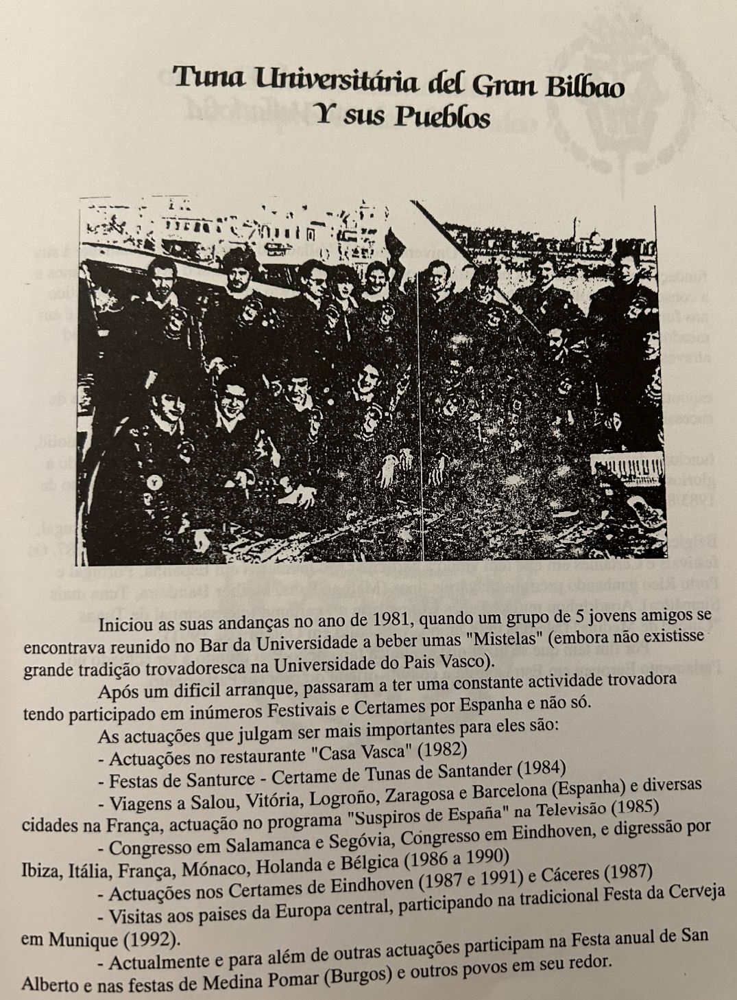
Fundación: 1981 en el bar de la Universidad del País Vasco
Origen: Grupo de 5 amigos tomando "mistelas"
Particularidad: Primera tuna con arraigo en el País Vasco
Etapa fundacional (1981-1984):
- 1982: Primeras actuaciones en el restaurante Casa Vasca
- 1984: Certamen de Tunas de Santander (Santurce)
- Superación de dificultades iniciales
Expansión nacional (1985):
- Gira por Salou, Vitoria, Logroño
- Actuaciones en Zaragoza y Barcelona
- Programa "Suspiros de España" en TV
Proyección internacional:
"De las mistelas universitarias a los escenarios de Europa: Francia, Mónaco, Italia, Holanda, Bélgica y la Fiesta de la Cerveza en Múnich"
Hitos destacados:
- 1985: Primera salida internacional (Francia)
- 1986-1990:
- Congresos en Salamanca, Segovia y Eindhoven
- Gira mediterránea (Ibiza, Italia, Mónaco)
- Tour por Benelux (Holanda y Bélgica)
- 1987: Doble participación en Eindhoven y Cáceres
- 1992: Fiesta de la Cerveza en Múnich
Actuaciones regulares actuales:
- Fiesta anual de San Alberto
- Festivales en Medina Pomar (Burgos)
- Eventos en localidades cercanas
Legado:
- Demostró que podía surgir tradición trovadoresca donde no la había
- Modelo de tuna viajera con proyección europea
- Puente cultural entre el País Vasco y otras regiones
- Mantenimiento de tradiciones 40 años después
Primer certamen regional de tunas organizado por La Casa Vasca en Bilbao, con participación de agrupaciones de toda España y bases que marcarían estándares para futuros eventos.
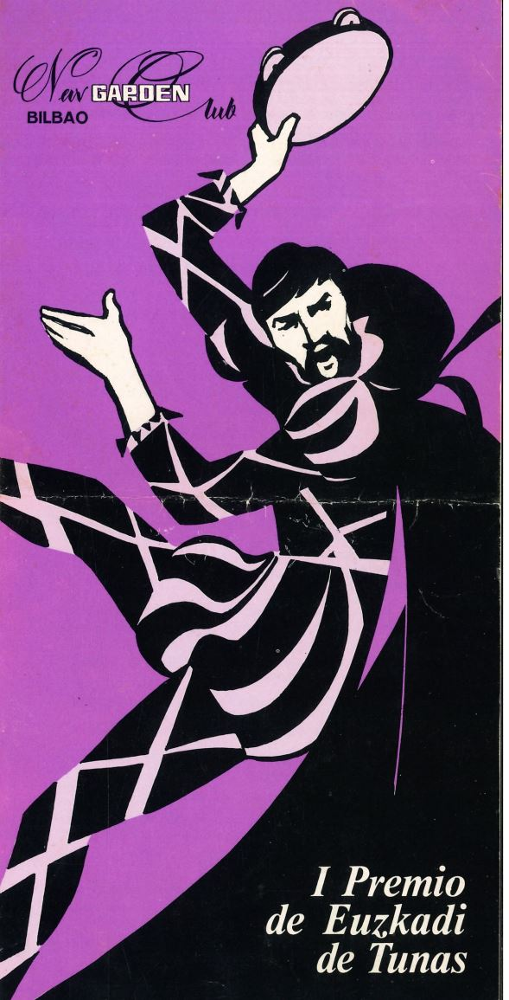
Evento: I Premio Euskadi de Tunas
Fechas: Eliminatorias: 15, 22, 29 abril 1983 | Final: 6 mayo 1983
Lugar: Sala de Fiestas "New Garden", Deusto (Bilbao)
Bases destacadas:
- Participación nacional (mínimo 12 miembros por tuna)
- Instrumentación tradicional exigida
- Obra inédita obligatoria + pieza libre
- Premios desde 200.000 pts (1º) hasta 25.000 pts (4º)
Trofeos especiales:
- Mejor uniformidad
- Panderetero más espectacular
- Mayor representación femenina
Jurado destacado:
- Juan Cordero Castaños (Director del Conservatorio de Bilbao)
- Lourdes Mateos (Percusionista)
- M.C. Navarro (Locutora de Tele-Norte)
- Profesionales de música y medios
Criterios de evaluación:
"Musicalidad, armonía, riqueza vocal, ritmo y simpatía"
- Bases oficiales del certamen
Importancia histórica:
- Primer certamen vasco de referencia para tunas
- Organizado en el emblemático local New Garden de Deusto
- Estableció estándares para futuros eventos tunantiles
Documento histórico que detalla los costes de confección de una bandera ceremonial y su mástil para la Tuna Universitaria de Lejona, mostrando los materiales y técnicas artesanales empleadas en la indumentaria tunera.
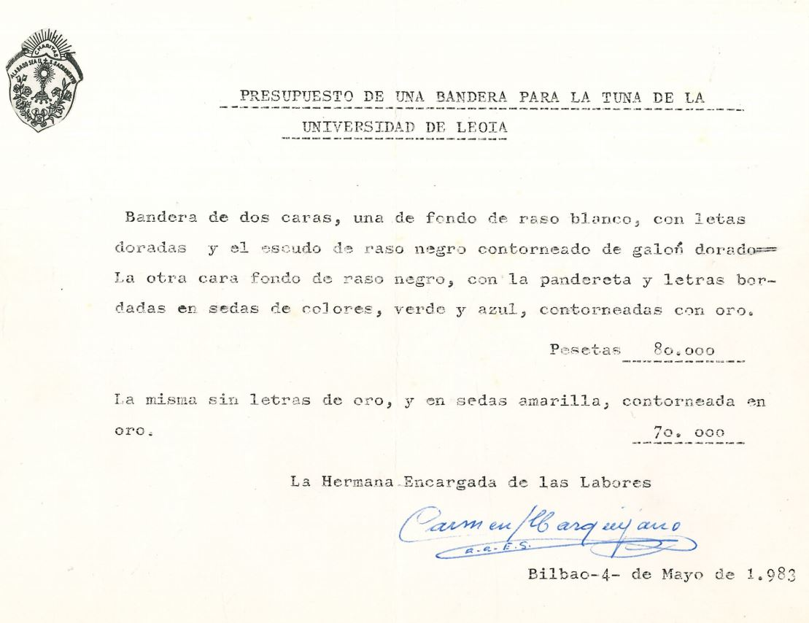
Institución: Tuna Universitaria de Lejona
Fecha: 4 mayo 1983
Ubicación: Bilbao, España
Opciones de bandera:
- Versión premium (80,000 pts):
- Cara 1: Raso blanco con letras doradas
- Cara 2: Raso negro con bordados multicolor
- Escudo en raso negro con galón dorado
- Versión estándar (70,000 pts):
- Mismos materiales pero sin dorados
- Letras en seda amarilla
- Contornos en oro
Responsable: "La Hermana Encargada de las Labores"
Mástil ceremonial:
"Tubo de latón cromado de 28mm y 2m de longitud, con remates fundidos - 8,975 pesetas (presupuestado por Construcciones en Metales El Zabala)"
Detalles técnicos:
- Materiales nobles: Raso, sedas de colores, hilos de oro
- Técnicas: Bordado artesanal, fundición a medida
- Elementos heráldicos: Escudo tunero, símbolos musicales
Proveedores:
- Bandera: Taller de bordados no especificado (presupuesto manuscrito)
- Mástil: Construcciones en Metales El Zabala (Bilbao)
Contexto histórico:
- Ejemplo de artesanía textil y metalúrgica vasca
- Documento previo a la mecanización de estos procesos
- Reflejo del valor ceremonial de los estandartes tuneros
- Relación coste (80,000 pts) ≈ 480€ actuales (ajustado a inflación)
Recorte de prensa que documenta la participación de la Tuna Universitaria en la Bajada de Fiestas de Bilbao durante la Aste Nagusia, mostrando su integración en las tradiciones festivas de la villa.
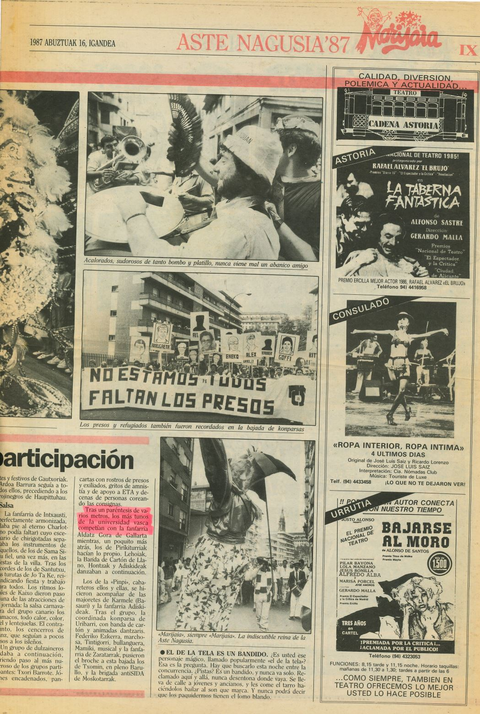
Evento: Bajada de Fiestas - Aste Nagusia 1987
Fecha: 16 de agosto de 1987
Lugar: Barrio Bilbao (centro de Bilbao)
Participación destacada:
- Intervención junto a fanfarrias y comparsas tradicionales
- Mensión específica: "los más tunantes de la universidad vasca"
- Actuación con la fanfarria Aldafa Corra de Galafán
- Presencia en el desfile junto a grupos como Pirukutrak y Karmele Basauri
Contexto festivo:
"Accionados, sudorosas de tanto bombo y platillo, nunca viene mal un abanico amigo"
- Descripción periodística del ambiente festivo
Detalles históricos:
- Documenta la temprana participación de la tuna en Aste Nagusia
- Muestra la convivencia con otras tradiciones bilbaínas
- Ejemplo de adaptación del repertorio tunantil al contexto festivo popular
Elementos característicos:
- Fusión con grupos de danzas vascas
- Uso de instrumentación tradicional en espacio callejero
- Mensión al carácter universitario dentro del contexto festivo
Documento histórico que muestra la participación internacional de la Tuna Universitaria de Bilbao en eventos europeos, específicamente en un banquete tradicional belga organizado por la orden estudiantil "Les Moines Pervers" de Saint-Louis (Bruselas).
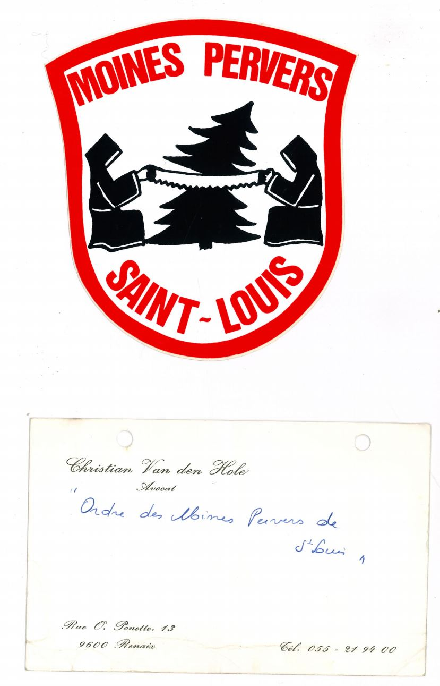
Evento: Banquete anual de Les Moines Pervers
Fecha: 27 de febrero de 1987
Lugar: Centre Communautaire de Jolibois, Bruselas
Detalles destacados:
- Invitación formal enviada desde Bélgica a la Tuna de Bilbao
- Menú gourmet especial: bisque de langosta, ostras, quesos belgas
- Semana de la cerveza belga previa al evento (18-27 feb)
- Confirmación de asistencia de 5-9 tunos de Bilbao
- Coordinación logística detallada (alojamiento, horarios)
Fragmento significativo:
"Nous avons le plaisir de vous annoncer la venue d'invités d'honneur: une délégation de l'université de BILBAO (Espagne): LA TUNA UNIVERSITARIA DE BILBAO qui, malgré leurs examens, viennent spécialement en Belgique"
Correspondencia: Cartas en 4 idiomas (francés, español, inglés, neerlandés) mostrando el carácter internacional del evento.
Ver documento completo (PDF)Histórico evento organizado por la Tuna de Ingenieros Técnicos de Obras Públicas de Alicante que reunió a 2,200 tunos de España y otros países, revitalizando las tradiciones tuneras con competencias, grabaciones y eventos masivos.
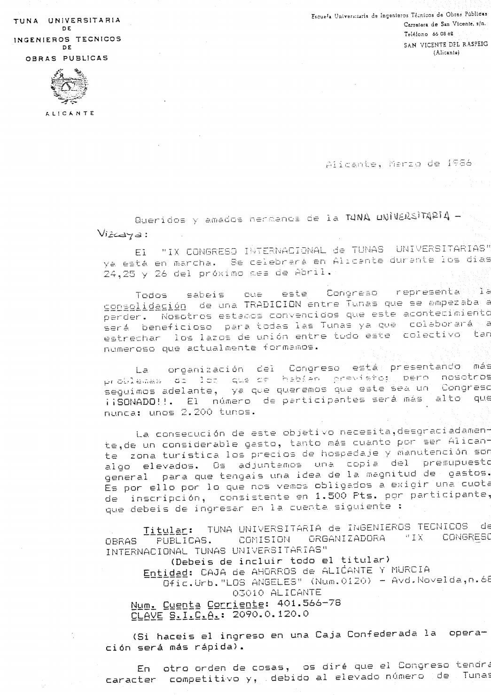
Organizador: Tuna Universitaria de Ingenieros Técnicos de Obras Públicas de Alicante
Fechas: 24-26 abril 1987
Participantes: 2,200 tunos (récord histórico)
Presupuesto: 12,671,435 pesetas
Datos clave:
- 40 tunas participantes (incluyendo internacionales)
- 25 premios en competencia
- Grabación de doble LP en directo
- Paella gigante para 2,000 personas
Participación internacional:
- Tuna Ciudad de Luz (Holanda)
- Estudiantina Académica de Coimbra (Portugal)
- Tuna Javierana de Bogotá (Colombia)
- Orden de la Golondria (Italia)
Programa destacado:
"Bautizo de pardillos en la Playa del Postiguet, pasacalles masivo por Alicante y ronda gigante nocturna frente al Ayuntamiento"
Estructura financiera:
- Cuota por tuna: 1,500 pesetas por miembro
- Principales gastos: alojamiento (5.2M pts), manutención (3.3M pts)
- Patrocinio: Ayuntamiento de Alicante y Universidad
Requisitos de participación:
- Mínimo 20 miembros por tuna (máximo 25-26)
- Envío de foto grupal, anecdotario y comprobante de pago
- Fecha límite: 20 marzo 1987
Legado histórico:
- Mayor congregación tunera hasta la fecha
- Primera grabación musical multitudinaria en directo
- Modelo para futuros congresos internacionales
- Demostración de capacidad organizativa estudiantil
Itinerario del pasacalles:
- Parque de Canalejas → Explanada de España
- Calle Cervantes (bajo el arco) → Plaza Ayuntamiento
- Calle Altamira → Rambla Méndez Núñez
- Plaza de Toros (actuaciones finales)
Artículo periodístico sobre las tunas de Bilbao (Tuna del Gran Bilbao y Tuna Universitaria de Deusto) y su tradición en la ciudad.
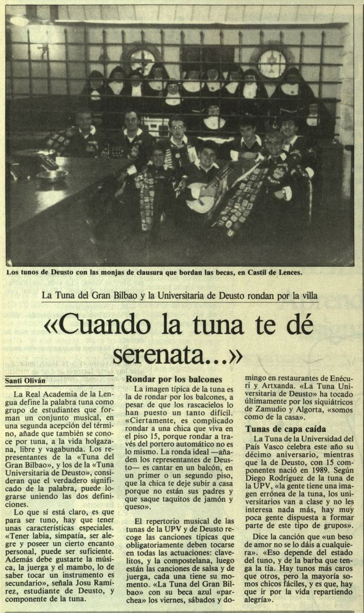
Publicación: Periódico local (autor: Santi Oliván / José J. Gamboa)
Temas destacados:
- Definición y esencia de la tuna según sus miembros
- Tradiciones: serenatas, vestuario (becas bordadas), novatos
- Repertorio musical y anécdotas de rondas
- Declive de interés en tunas universitarias (años 90)
- Curiosa analogía con el último tonelero de Bilbao
Frases icónicas:
"Para ser tuno hay que tener simpatía, encanto personal, gusto por la juerga... lo de tocar un instrumento es secundario"Ver documento completo (PDF)
Participación de la Tuna Universitaria del Gran Bilbao en el certamen de Cuenca, junto a tunas de toda España.
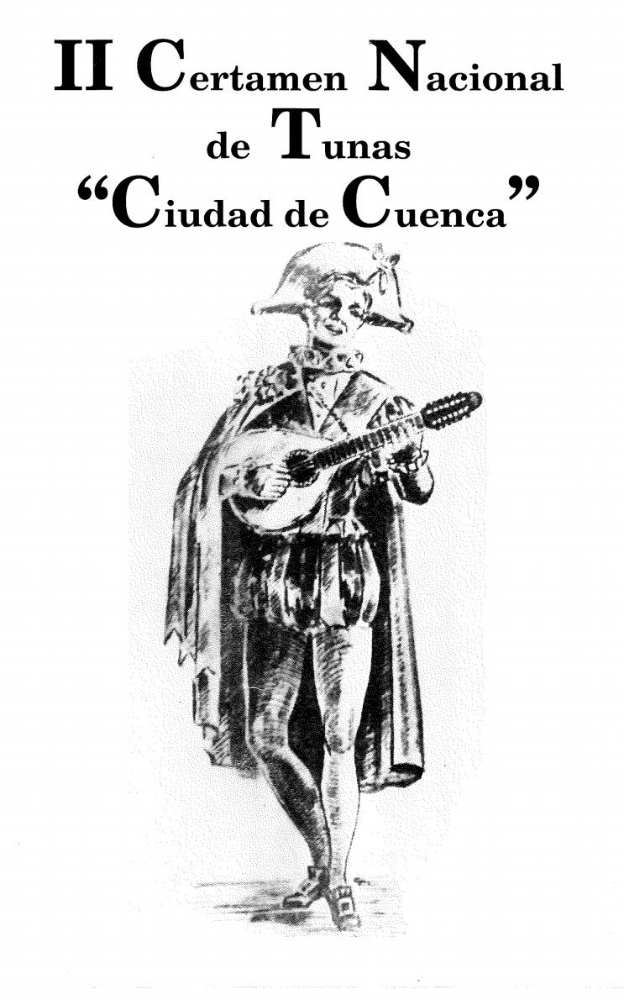
Evento: II Certamen Nacional de Tunas - Ciudad de Cuenca
Fecha: 23 de septiembre de 1995
Tunas participantes:
- Tuna de Económicas de Valladolid
- Tuna Universitaria del Gran Bilbao
- Tuna de Derecho de Oviedo
- Tuna Universitaria de Almería
- Tuna de Medicina de Murcia
- Tuna de Telecomunicaciones de Valencia
- Tuna de Industriales de Valencia
Organizador: Tuna Universitaria de Cuenca
Lugar: Teatro Auditorio de Cuenca
Ver documento completo (PDF)Participación histórica de la Tuna Universitaria del Gran Bilbao en el primer certamen exclusivo para tunas de ciencias, celebrado en Barcelona.
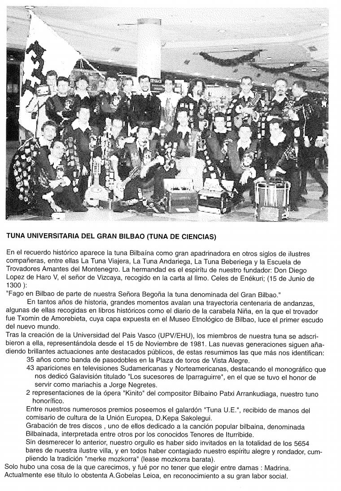
Evento: I Certamen Nacional de Tunas de Ciencias
Organizador: Ilustrísima Tuna de Ciencias de Barcelona
Localización: Barcelona, 1997
Cartel oficial:
- Primer certamen especializado en ciencias
- Diseño gráfico representativo de la época
- Muestra el creciente prestigio de las tunas científicas
Presentación institucional:
- Historia desde 1300 (Don Diego López de Haro V)
- Adscripción a la UPV/EHU desde 1981
- Logros internacionales y locales
Logros destacados de la Tuna:
- 35 años como banda en la Plaza de Toros de Vista Alegre
- 43 apariciones en televisiones internacionales
- Premio "Tuna U.E." de la Unión Europea
- Grabación de 3 discos, incluyendo bilbainadas
- Visita a los 5,654 bares de Bilbao (récord documentado)
Fragmento histórico:
"Fago on Bilbao de parte de nuestra Señora Begojía la tuna denominada del Gran Bilbao"
- Carta fundacional de 1300, citada en la presentación oficial
Curiosidades:
- Capa histórica de Txomin de Amorebieta en el Museo Etnológico
- Tradición de la "merke mozkorra" (juerga bilbaína)
- Madrina honorífica: A. Gobelas Leica
Recorte del diario DEIA que documenta el regreso de tres miembros de la Tuna Universitaria del Gran Bilbao tras una gira de seis meses por América, financiada con sus propias actuaciones.
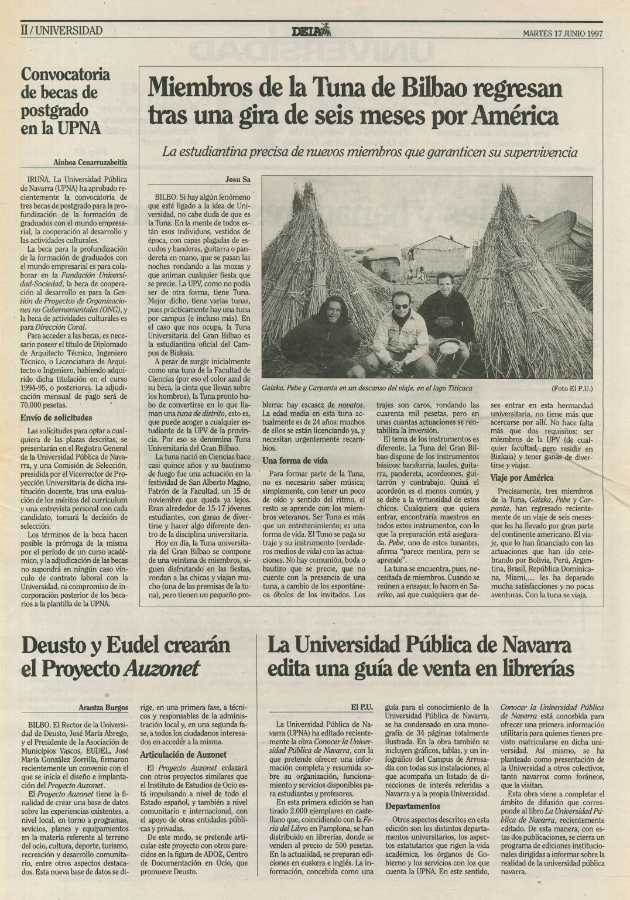
Publicación: DEIA, 17 de junio de 1997
Duración: 6 meses (enero-junio 1997)
Miembros participantes: Gatista, Pubs y Carpentia (seudónimos tunantescos)
Países visitados:
- Bolivia (incluyendo el Lago Titicaca)
- Perú
- Argentina
- Brasil
- República Dominicana
- Miami (EE.UU.)
Modelo de financiación:
- Autogestión mediante actuaciones
- Actuaciones en universidades y locales
- Intercambios culturales
Contexto institucional:
"La Tuna Universitaria del Gran Bilbao es la estudiantina oficial del Campus de Bizkaia... aunque surgió en Ciencias (por el azul de su beca), acoge a cualquier estudiante de la UPV/EHU"
Detalles históricos:
- Primera gira documentada de larga duración en América
- Menciona la escasez de miembros y el proceso de relevo generacional
- Detalla los instrumentos tradicionales de la tuna (bandurrias, guitarro, contrabajo)
- Requisitos para ingresar: ser estudiante UPV/EHU y residir en Bizkaia
Testimonio:
- "Con la tuna se viaja" - Frase destacada del reportaje
- Los trajes tunantescos costaban ~40.000 pts (240€)
- Lugar de ensayos: Sarriko (actual Facultad de Economía y Empresa)
Reportaje especial sobre la odisea de tres tuneros del Gran Bilbao que recorrieron América durante seis meses, financiando su viaje con actuaciones espontáneas y contratos musicales.
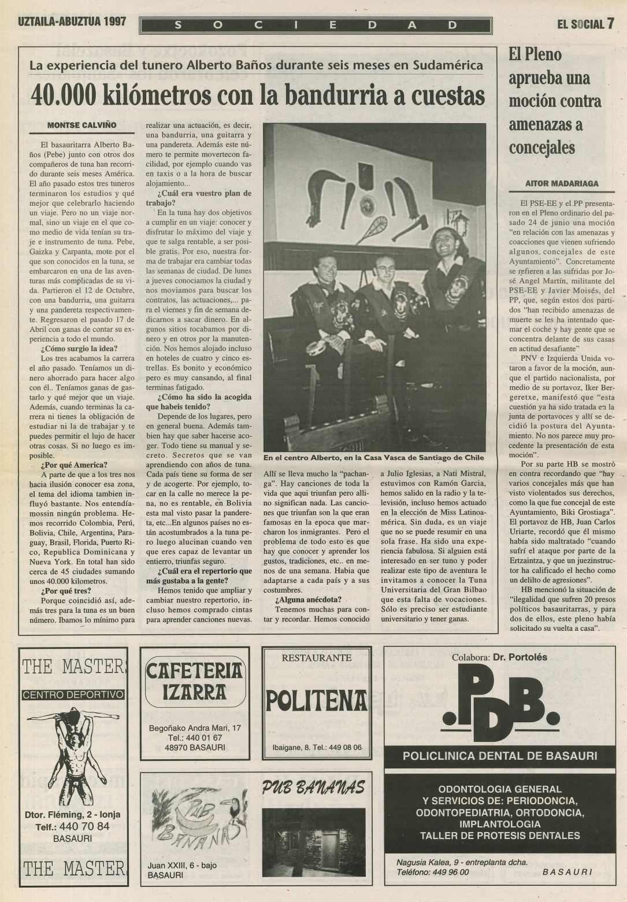
Publicación: EL SOCIAL (julio-agosto 1997)
Protagonistas: "Pebo" (Alberto Baños, Basauritarra), Gaizka y Carpania
Duración: 12 octubre 1996 - 17 abril 1997 (6 meses)
Ruta épica:
- Colombia, Perú, Bolivia
- Chile (Casa Vasca Santiago)
- Argentina, Paraguay, Brasil
- Florida, Puerto Rico, Rep. Dominicana
- Nueva York (EE.UU.)
Datos clave:
- 45 ciudades visitadas
- 40,000 km recorridos
- Instrumentos: bandurria, guitarra, pandereta
- Presupuesto inicial: ahorros universitarios
Estrategia de supervivencia:
"De lunes a jueves buscábamos contratos, fines de semana actuábamos. Nos alojamos hasta en hoteles 5 estrellas... todo con nuestra música"
Adaptación musical:
- Repertorio ampliado con canciones locales
- Éxitos inesperados: "pachangas" y temas de inmigrantes
- Actuación en elección de Miss Latinoamérica
- Apariciones en radio/TV chilena
Anécdotas reveladoras:
- Conocieron a Ramón García (presentador) y Julio Iglesias
- En Bolivia descubrieron que "la tuna alucina" al público
- Dificultad para encontrar canciones que conectaran en todos los países
- Cambio semanal de ciudad para optimizar ganancias
Legado:
- Demostró la viabilidad del modelo autogestionario
- Inspiró futuras giras internacionales de la tuna
- Documentó conexiones con la diáspora vasca (Casas Vascas)
Con motivo del 25º aniversario de la Tuna Universitaria del Gran Bilbao, se realiza un llamamiento a todos los exmiembros para celebrar este hito musical.
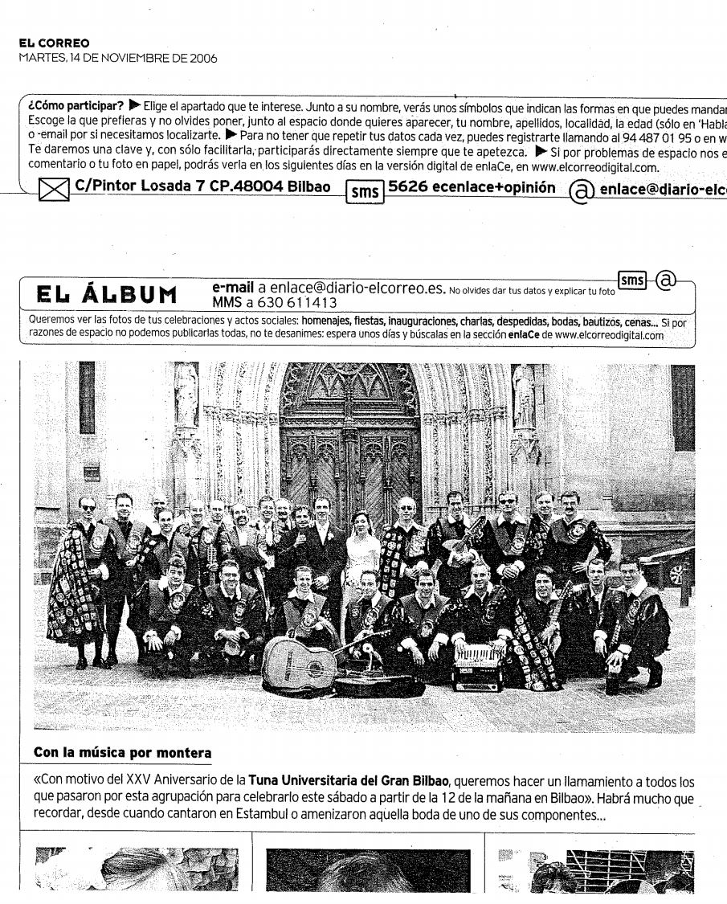
Publicación: Periódico no especificado
Fecha de recorte: 14 noviembre 2006
Evento: Celebración XXV Aniversario
Detalles del evento:
- Fecha: Sábado (día no especificado)
- Hora: Desde las 12:00 horas
- Lugar: Bilbao
- Participantes: Todos los exmiembros de la tuna
Memorias destacadas:
- Concierto en Estambul
- Participación en boda de un miembro
- 25 años de historia musical
Significado histórico:
- Cuarto de siglo manteniendo tradiciones universitarias
- Reunión generacional de tunos
- Oportunidad para revivir anécdotas y canciones
Legado:
- Demostración de la permanencia de la tradición tunera
- Importancia de la tuna en eventos personales de sus miembros
- Proyección internacional (ejemplo: Estambul)
Publicación académica que recoge seis estudios antropológicos e históricos sobre cultura vasca y cantábrica.
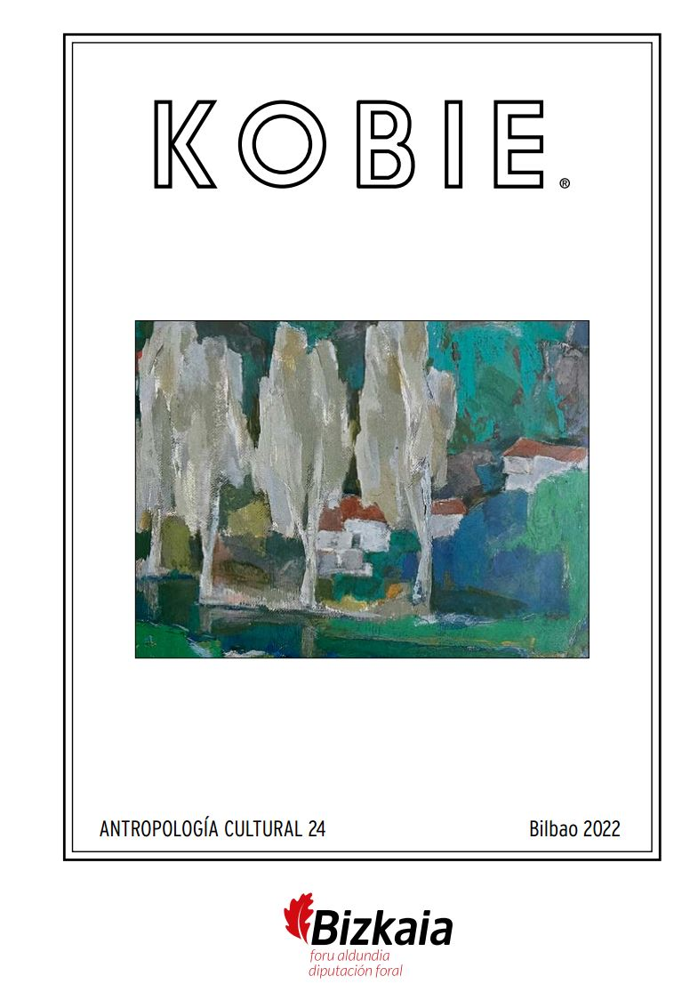
Publicación: KOBIE - Antropología Cultural
Editor: Bizkaiko Foru Aldundia / Diputación Foral de Bizkaia
ISSN: 0214-7971
Contenidos destacados:
- Historia del arte en Balmaseda (1547-1924)
- Estelas medievales de Vivar del Cid
- Tradiciones carnavalescas urbanas
- Arquitectura popular: hórreos del Cáucaso
Estudios adicionales:
- Ecología histórica: el zorro en Bizkaia
- Antropología religiosa: Semana Santa bilbaína
- Patrimonio cultural inmaterial
Significado académico:
- Compendio interdisciplinar de estudios culturales
- Investigaciones basadas en archivos históricos
- Metodologías combinadas de antropología e historia
Valor patrimonial:
- Documentación de tradiciones en riesgo
- Análisis de evolución cultural urbana/rural
- Preservación de memoria histórica local